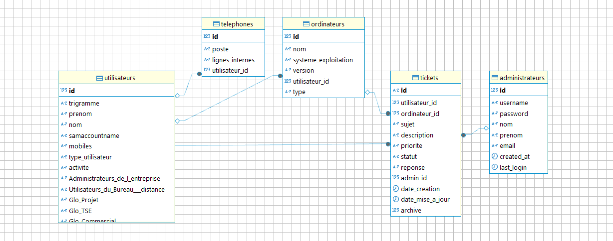
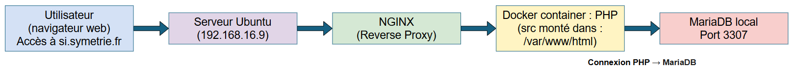
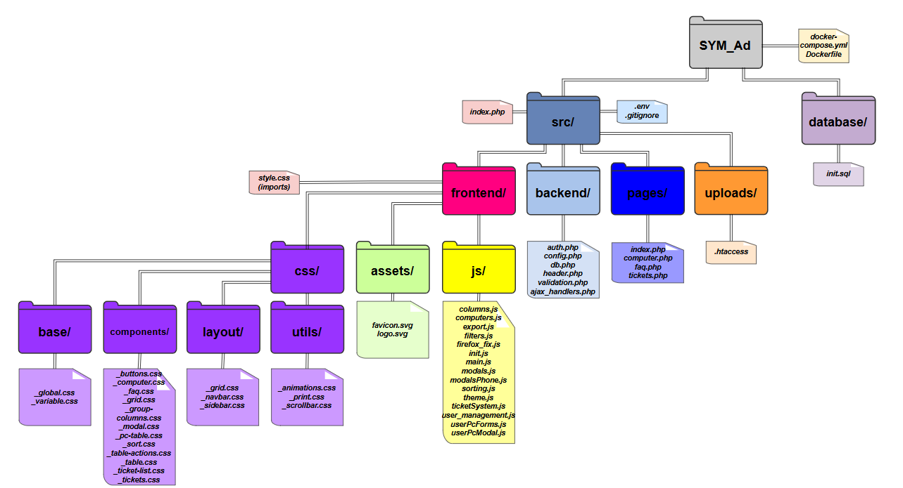

📌 Contexte & Enjeux
Alternant chez Symétrie (Nîmes), PME spécialisée en métrologie, j’ai conçu cet outil pour pallier les limites des fichiers Excel et centraliser la gestion des ressources informatiques et du support.
🎯 Objectifs du projet
- Remplacer les tableaux Excel par une base de données centralisée.
- Simplifier l’affectation du matériel aux utilisateurs.
- Améliorer la traçabilité des interventions via tickets.
- Garantir la sécurité des accès (roles + BCRYPT).
🧠 Approche et méthode
- Recueil des besoins avec mon tuteur en entreprise.
- Modélisation UML de la base de données.
- Développement itératif avec tests à chaque phase.
- Déploiement en docker sur serveur Ubuntu.


🧱 Technologies & architecture
| Composants | Détails |
|---|---|
| Langage | PHP 8 + MariaDB, JS, HTML5, CSS3 |
| DB | MariaDB avec 5 tables principales (utilisateurs, ordinateurs, telephone, tickets...) |
| Conteneurisation | Docker Compose (Apache, PHP-FPM, MariaDB) |
| Versioning | GitLab via SourceTree |
| Dev | VSCode sous WAMP |
| Déploiement | Sur Ubuntu 20.04, IP interne, sauvegarde cron + dump SQL |
📦 Progiciel et structure
Voici l’arborescence principale :

🧩 Fonctionnalités clés
1. Gestion utilisateurs & AD
- Import manuel des utilisateurs AD, affectation aux groupes métiers.
- Ajout, modification, bannissement via formulaires sécurisés.
- Filtres rapides (par nom, groupe, statut…).

2. Gestion équipements
- Ajout/modification des équipements avec champs dynamiques (OS).
- Affectation et historique d’usage.
- Recherche / filtre par type, utilisateur.

3. Système de tickets interne
- Formulaire d'incident sécurisé avec PJ (JPG/PNG).
- Suivi du ticket (ouvert, en cours, clos) avec historique.
- Export PDF du ticket.

🔒 Sécurité & bonnes pratiques
- BCRYPT pour les mots de passe + salage automatique.
- Protection CSRF (token dans les formulaires).
- Sessions sécurisées avec vérification de timeout.
- Requêtes préparées contre les injections SQL.
- Audit simple : logs d’actions (connexion, création ticket...).

📉 Limites & axes d’amélioration
- Pas d’automatisation AD (possible via LDAP script).
- Pas de notification par mail ou push.
- Performance perfectible, utilisation de DataTables envisagée.
- Responsive à optimiser (mobile/tablette).
🚀 Evolutions futures proposées
- Connexion LDAP pour synchronisation des utilisateurs.
- Dashboard avec graphiques (Chart.js).
- API REST pour apps mobiles ou connecteurs externes.
- Migrer vers Laravel ou Symfony.
🎓 Compétences mises en œuvre
- Analyse du besoin → solution technique.
- Conception BD via UML et SQL.
- Développement MVC en PHP 8.
- Sécurisation, tests, versioning, déploiement.
- Organisation en équipe et gestion de projet agile.